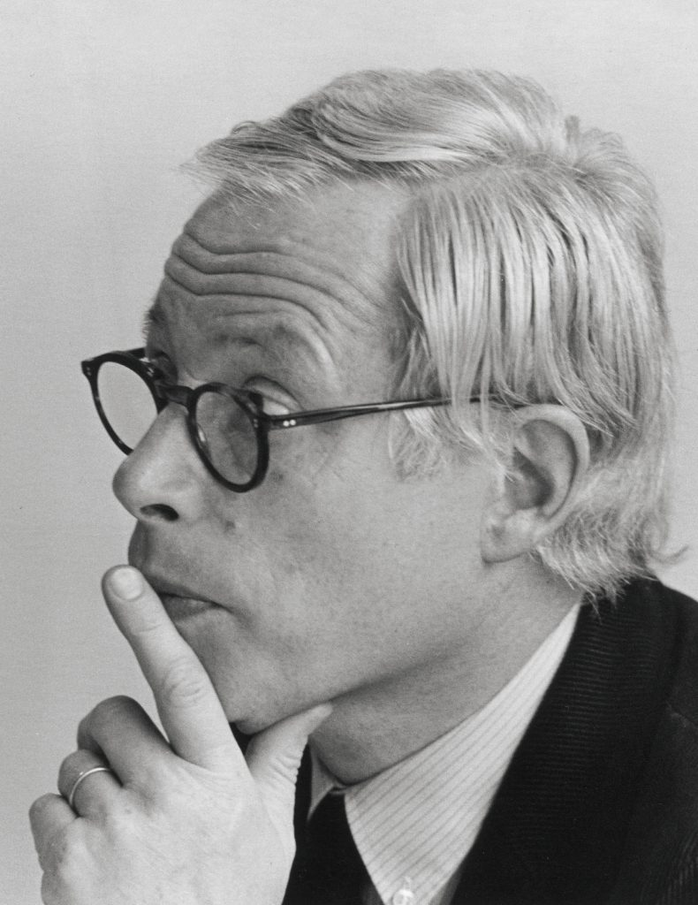

람스의 사고에 흐르는 깊은 도덕적 흐름은 그가 디자인하는 제품으로 퍼져 나간다. 물결에 깃든 주된 힘은 ‘절제’다. 중요치 않은 요소를 삭제하고 제품이 스스로 말하도록 하며 사용자가 각자의 방식대로 제품을 누릴 수 있게끔 디자이너가 스스로 발휘해야 하는 제약을 일컬어 람스는 ‘절제’라는 단어를 사용한다. 이같은 행동은 보다 큰 도덕적 의무에 부합한다. 계속 더 새롭고 화려한 신제품을 찾아 헤매는 대신 물건에 애착을 가지도록 유도해서 인간의 삶을 풍요롭게 하는 것이다. 이는 잉여, 낭비, 시각 공해, 환경 파괴에 맞선 세계적인 투쟁이다.
람스는 은퇴한 이후 에세이, 인터뷰, 전시를 통해 이같은 가치를 주창해 왔다. 올해 말에는 다큐멘터리 영화도 선보일 예정이다. 디자인이란 사용자를 지배하는 게 아니라 도와야 하며, 인간이 자원과 에너지를 낭비하지 않게끔 보다 적은 물건으로도 편안한 삶을 향유할 수 있어야 한다는 것이 람스의 생각이다. “행동의 새로운 틀이 필요합니다. 그게 바로 디자인이죠.” 람스는 산업디자인이란 만족감을 줄 뿐 아니라 도덕적 사유도 이끌어야 한다고 믿는다. 디자인 역사가 클라우스 클렘프는 디터 람스를 현대 디자인에 놓인 거대한 두 개의 다리 중 하나라 일컬었다. 과거의 디자이너가 예술의 전통을 산업에 투입했다면, 람스는 산업을 가정과 시민사회에 들여놓았다. 디터 람스는 인간을 자유롭게 하는 산업디자인의 역량을 활성화하고 인류와 지구를 위해 유용하며 만족감을 주는 물건을 만들어야 한다는 디자이너의 책임에 대해 인지하고 있다.
